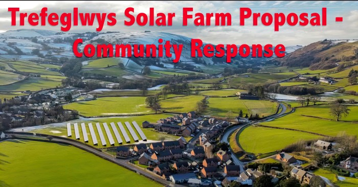
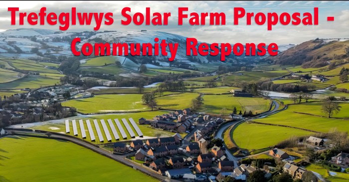

A planning application has been submitted to install a giant solar farm into the middle of several housing estates, in the rural village of Trefeglwys in Powys, Wales. You can see the actual estates and a mock-up of the solar farm in the banner image above (credits in footer).
The plan places 1528 x 2.1 x 1.1 metre solar panels within less than 10 metres of some properties, directly in front of their living rooms, with no fences or other visual break inbetween. Please note that the mock-up is missing the 2 elevated buildings that should be on the left side of the photo, towering above the hedgerows and panels.
A fair question, and the answer probably depends on your proximity to the panels - but some combination of:
-
Property Values: Everywhere has a different opinion, ranging from "no effect" to "kiss goodbye to 25% of your property value". The largest study of its kind (commissioned by beneficiaries of the solar industry) reckoned that buyers will pay £600 GBP more per year (£15,000 GBP over the course of a regular mortgage) not to live within kilometers of a solar farm. This farm will be 100 times closer to our homes.
Don't think it'll only affect us, though. A solar farm in the village, especially so close to a large proportion of the houses is likely to affect prices farther afield, too
-
Precedent: This is low-value land, on a floodplain - it can't be used for anything except this or grazing. This isn't just about this one solar farm - if this application goes through, it opens the flood gates, quite literally, to use almost any land in any location within the village, county and potentially wider, for solar farms.
It's us today, but it could be your neighbouring field or village tomorrow - and once one passes, the rest will be virtually unstoppable!
-
Legal Process is being ignored: The plan states that the site is 0.9 hectares, but the SAB (SuDS Approval Body) has established it as > 1.0 hectare. That means it qualifies as a "Major Development" according to Article 2 of the Town and County Planning (Development Management Procedure) (Wales) Order 2012 (DMPWO), which in turn means that there are all sorts of additional legal obligations which have been skipped, such as:
- Making draft planning application documents available to view
- Providing a 28 day pre-application consultation period
- Reporting on how the pre-application consultation was undertaken and how peoples views were considered, in a 'Pre-Application Consultation Report', submitted as part of the application
- Providing written notice to all owners/occupiers of land adjoining the site
The SuDS Approval Body (SAB) rejected it due to "fundamental flaws" - their words, not ours!
Missing Wildlife Surveys. Local residents are aware of both Bats and Natterjack Toads in the area - the former are a regular sight around and over the proposed site and the latter have been seen. Both of these, as well as Great Crested Newts (which may also be present) are protected under various UK and EU laws, and it is encumbant on the Local Planning Authority to request surveys and delay development until they have been provided. The presence of these animals has been raised with them through multiple objections.
Because the plan is full of inconsistencies, errors, omissions, exaggerations and "liberties with the truth"
Late-breaking changes to plans after official responses which should affect key decisions are being overlooked. If the plans change, shouldn't officials be asked if it affects their decisions?
Because councillors publically declared that they'd made up their minds before they were supposed to. Part way through the public notice period, and before they've been legally allowed to discuss it with eachother due to declared conflicts of interest, they'd already made up their minds.
Because councillors are willing to approve it in spite of all of the errors, omissions, missed legal process and government bodies (SAB) explicitly telling them they can't!
On 15th January, 2024, an A4 paper notice was placed on the entrance gate to the field adjacent to Plas Trannon and Maes Trannon in Trefeglwys, announcing a Planning Application to build a 0.6 Megawatt solar farm on the field.
This website documents some of the community's response to the proposal itself, the process and council handling of it, because there are many aspects regarding the handling of this application which appear questionable.
Many concerns have been raised with the council by the community, via multiple channels, and they appear to have been ignored. The process is opaque and possibly being subverted. Many within the community feel that the decision is a foregone conclusion, and actions and comments by councillors appear to support this.
We'll detail some of the contradictions, errors and omissions in the proposal, as well as legal matters being overlooked, timeline irregularities, etc.
As noted above, the community is feeding back our concerns via the Make a Comment tab on the Powys Government Planning Application Comments website, or via the email address provided on the notice placed on 15th January. So far, no one has received a response to any of these concerns. In light of this, and the fact that "In light of recent data protection incidents, it is considered that the risk resulting from publishing third party correspondence is too great", we've decided to publish our own thoughts for public dissemination.
(I mean, really, it's not too hard to anonymise comments, is it? They managed it for the councillor ones!)
We have also created a Community Views Form, in order to gauge and visualize community sentiment, as this is also sadly lacking from the process.
This area is not under construction. Despite community efforts and dozens of objection letters, there's been no engagement or feedback from the council or planning committee.
All concerns regarding the plan, process and points of law have been ignored.
We would like, have asked (or now ask) and have yet to receive answers to the following questions:
-
Regarding the Consultee Comment on Tue 28 Jan 2025 entitled "PCC-(N) Land Drainage", how have the matters raised been addressed? Specifically:
-
"Having reviewed the information provided by the applicant, the SAB deem the surface water drainage strategy (SWDS) is fundamentally flawed."
As the SAB deem the Surface Water Drainage Strategy (SWDS) as fundamentally flawed, the Lead Local Flood Authority (LLFA) would recommend refusing the application until such time as the applicant is able to demonstrate that a SAB Compliant SWDS is designed for the site"
"No drainage details have been submitted with this application"
"If the applicant was to submit further information to confirm how the surface water is being managed and also indicated that it is being managed in a way that would be broadly SAB compliant, we would be happy to reconsider our recommendation for refusal. Without further information, we would continue to recommend refusal."
"The requirement to obtain SAB consent sits outside of the planning process but is enforceable in a similar manner to planning law. It is a requirement to obtain SAB consent in addition to planning consent. Failure to engage with compliant SuDS design at an early stage may lead to significant unnecessary redesign costs."
How has this matter been addressed and resolved?
-
-
Why did anonymous Ward Councillor, in their Consultee Comment on Wed 29 Jan 2025, the day after the above comment from the LLFA (Lead Local Flood Authority) state "I am in general support of the application" when there is an outstanding requirement to obtain SuDS Approval Body consent?
-
Can the application be granted without SuDS Approval Body consent?
-
In the application, it is stated that the site is 0.9 hectares, but in the Consultee Comment from Land Drainage on 27 Jan 2025, the LLFA (Lead Local Flood Authority) states "Furthermore, the SuDS Approval Body (SAB) deem that the construction area is greater than 100m2". 100m2 is 1 hectare, which is one of the qualifying thresholds for a "Major Development". As such, there are significantly more requirements of the proposer, for example, a statutory 28 day pre-application consultation into the planning process.
As members of the community, we are not aware of, and have not been involved in any pre-application consultation process.
- If there is evidence to refute SAB's assessment of the site area, please could it be provided via the planning portal?
- If there is no evidence to the contrary, will the application be rejected on the basis that it has failed to meet its legal obligations?
- If the application will not be rejected on these grounds, please explain why these statutory requirements do not apply
-
In their comment in support of the application on 29 Jan 2025, anonymous Ward Councillor stated that they have reviewed "responses received through the planning portal"
- The Powys County Council notice to the community was posted on 15th Jan, and clearly stated that anyone who wishes to make representations regarding the application must respond "within 21 days". As such, the public has until 5th February 2025 to make their feelings known. Indeed, we're aware of several long letters being delivered on or after the date on which the councillor had already made his intent known
-
In their comment in support of the application on 29 Jan 2025, anonymous Ward Councillor stated that they have "taken on board resident comments".
- These are objections, not comments; as clearly stated
-
Planning Application (6.2) states: "However, even if the panels were technically located in the flood zone – the manner of their construction (piled) and no concrete proposed, it means that there will be no land taken up as part of the proposal".
- There's no "if" about it. The panels are located in the flood zone, as clearly shown elsewhere in the plans, NRW and other responses
- Now that the plans have been revised, both the Sub-station and Electric Housing will now be raised on 600mm concrete, rendering this statement incorrect
Planning Application
The planning application details can be found here
Legal
- Qualifying as a Major Development means that legal obligations such as a mandatory pre-application consultation, imposed by section 61Z of the Town and County Planning Act 1990 have not been met. Further provision is contained in Part 1A of the DMPWO.
Press Coverage
Social Media Discussions
Community Response